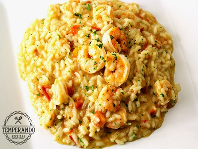

Cardápio do Sabor & Arte
Nossos Pratos
| Prato | Descrição | Preço |
|---|---|---|
| Filé Mignon ao Molho Madeira | Filé mignon grelhado servido com molho madeira e acompanhamentos | R$ 89,90 |
| Risoto de Camarão | Risoto cremoso com camarões frescos e ervas finas | R$ 65,50 |
| Salada | Mix de folhas, queijo feta, tomate seco e azeitonas | R$ 42,00 |
| Frango à Parmegiana | Filé de frango empanado com molho de tomate e queijo derretido e acompanhamentos | R$ 55,90 |
| Moqueca de Peixe | Peixe branco cozido no leite de coco com dendê e pimentões | R$ 70,00 |
Sugestões do Chef
- Experimente nosso Filé Mignon ao Molho Madeira - prato mais pedido da casa!
- Para os amantes de frutos do mar, o Risoto de Camarão é uma excelente opção
- Nossa Moqueca de Peixe é preparada com ingredientes frescos e receita tradicional
Alguns de Nossos Pratos

Siga-nos nas Redes Sociais
Confira nossas novidades e promoções especiais: